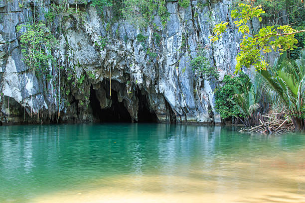
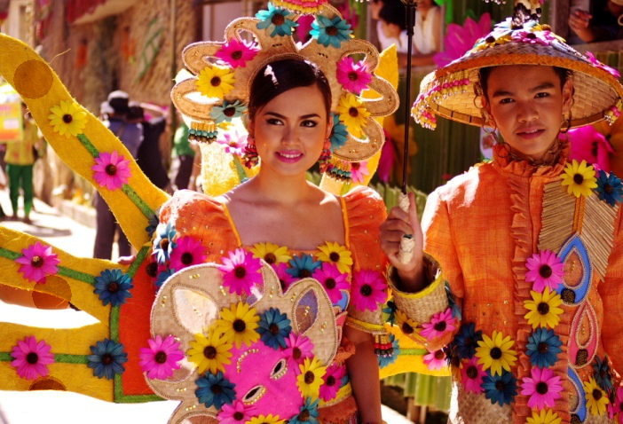
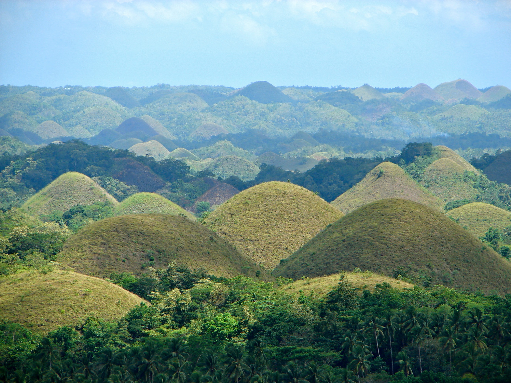
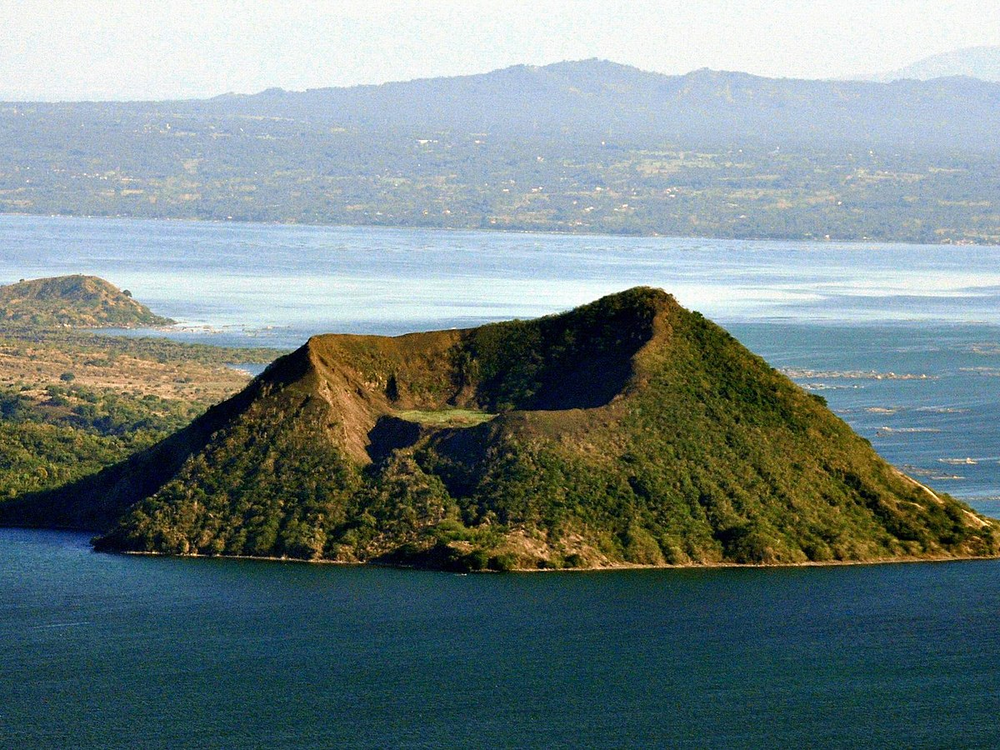

Banaue Rice Terraces

Behold the breathtaking Banaue Rice Terraces, a UNESCO World Heritage site. Carved into the mountains by Ifugao tribes over 2,000 years ago, these terraces showcase the ingenious engineering of ancient Filipino agricultural practices.
White Beach, Boracay

Dive into the crystal-clear waters of White Beach, Boracay. With its powdery white sand and vibrant nightlife, this tropical paradise offers a perfect blend of relaxation and excitement.
Mayon Volcano

Marvel at the perfectly symmetrical Mayon Volcano, known for its near-perfect cone. Located in Albay, this active stratovolcano is not only a geological wonder but also a source of rich legends.
Puerto Princesa Underground River
Embark on an enchanting boat journey through the Puerto Princesa Underground River. This UNESCO-listed site in Palawan boasts mesmerizing limestone formations and a diverse ecosystem.
Pahiyas Festival, Lucban
Experience the vibrant Pahiyas Festival in Lucban, Quezon. Celebrated every May, the town transforms into a colorful spectacle as houses are adorned with vibrant agricultural produce in honor of San Isidro Labrador.
Chocolate Hills, Bohol
Witness the surreal landscape of the Chocolate Hills in Bohol. During the dry season, these cone-shaped hills turn chocolate brown, creating a unique and mesmerizing panorama.
Taal Volcano and Lake
Gaze upon the stunning Taal Volcano, one of the world's smallest active volcanoes, situated within a lake. The picturesque scene is a testament to the Philippines' geological wonders.
Ati-Atihan Festival, Kalibo

Immerse yourself in the lively Ati-Atihan Festival in Kalibo, Aklan. Known as the "Mother of All Philippine Festivals," it's a captivating celebration of dance, music, and vibrant costumes.